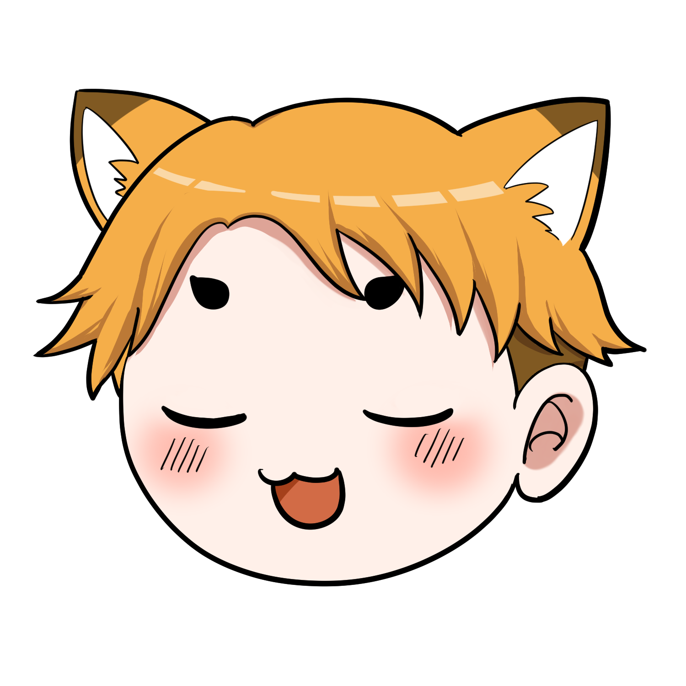

エクソソーム施術の種類
点滴・注射・美容液を比較
🗺️ まず全体像を知ろう

エクソソームの施術って、種類が多くてよく分からないよ！

大きく分けると、4つのアプローチがあるのよ。
① 全身に届ける「点滴」
② 気になる部位に直接打つ「注射」
③ 皮膚から細かく注入する「メソガン」
④ 自宅で使える「美容液・スキンケア」
💉 ① エクソソーム点滴
点滴（静脈内投与）
エクソソームや培養上清液を、点滴で静脈から全身に届ける方法です。アンチエイジングや疲労感のケアを目的に選ばれることが多いタイプです。
こんな人に：全身的なエイジングケアに関心がある／部分的より広範囲を意識したい／継続的に通える
💉 ② 部分注射
注射（局所投与）
気になる部位（顔・首・頭皮など）に直接エクソソームを注入する方法です。狙ったエリアにピンポイントで届けたいときに選ばれます。
こんな人に：顔のハリ・頭皮ケアなどポイントを絞りたい／全身よりピンポイント希望
🔫 ③ メソガン施術
メソガン（細針による多点注入）
細い針を持つ専用機器（メソガン）を使って、皮膚の浅い層に少量ずつ多点で注入する方法です。広い面積を均一にケアしたいときに使われます。
こんな人に：顔全体・頭皮全体を均一にケアしたい／単純な注射より細かな処置を希望

機械で打つの？ ちょっとドキドキするね！

専用機器を使うから、医師が一点ずつ手で打つよりムラが少ないと言われているのよ。実際には麻酔クリームを塗って施術するから、痛みも軽減されることが多いわ。
🧴 ④ 美容液・スキンケア
塗るタイプ（化粧品）
エクソソーム配合の化粧品・美容液を自宅で使う方法です。施術と組み合わせて使うことも、単独で続けることもできます。
こんな人に：クリニックは敷居が高い／毎日コツコツが好き／施術後のホームケアにも
化粧品としてのエクソソーム配合製品は「化粧品」の枠組みで販売されており、肌の状態を整える目的の製品です。注射や点滴と同じ作用を期待するものではないため、目的に応じて選ぶことが大切です。
🤔 結局、どれを選べばいい？

4種類もあると迷うのだ…どれが正解なのだ？
「これが正解」って単純な話じゃないの。
① 目的（全身？部分？日常？）
② 予算（1回完結？継続？）
③ ダウンタイムの許容（赤みが出てもOK？）
この3つを考えて選ぶといいわ。

サッカーで言うと、ポジションを選ぶみたいなものだね！自分に合うものを見つけよう！
実際に施術を選ぶときは、必ず医療機関でカウンセリングを受け、自分の体質・目的・予算に合わせて医師と相談してください。製品の由来・濃度・施術回数の目安などは、施設によって異なります。
📝 まとめ
- エクソソーム施術には、点滴・注射・メソガン・美容液の大きく4タイプ
- 全身ケアは「点滴」、部分ケアは「注射」、面で均一は「メソガン」、日常は「美容液」
- 「これが一番」はなく、目的・予算・ダウンタイムで選ぶ
- 施術選びは医療機関でのカウンセリングが必須